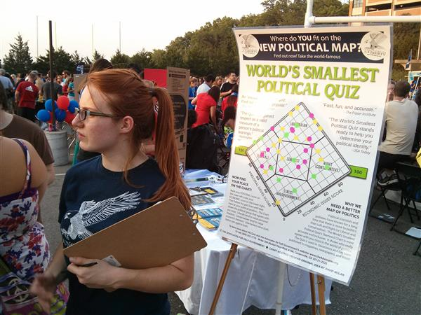
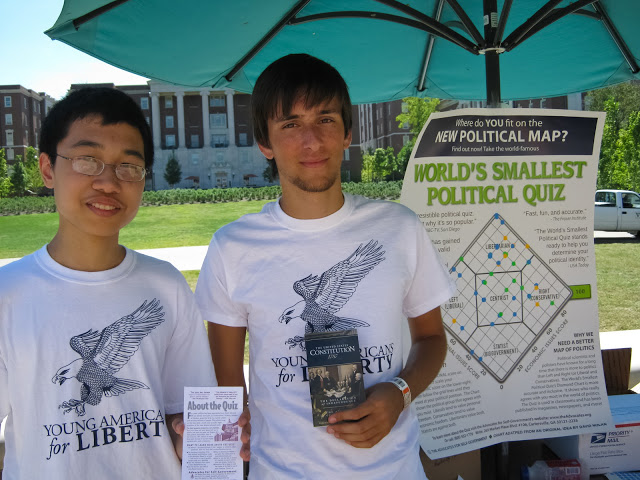

Teaching about liberty
We're surrounded by classmates who are naturally drawn to 'economically conservative' and 'socially liberal' policies, but these people may not realize that this makes them libertarian. We seek to get the word out—to educate people about libertarianism. And this starts with 'the world's smallest political quiz,' which we administer on campus at our tabling events. There's a suprisingly large contengency of liberty-minded students on campus, many of whom are entirely disinfranchized by politics at present. We show them an alternate perspective with a growing relevance given today's challenging social and political environment.
(Image courtesy Julianna Orsay)
Following the Constitution
Violations of our liberty abound:
NSA Spying, SOPA/PIPA Internet Restriciton, 'Net-Neutrality', Arming the Rebels, USA Patriot Act.
Yet we operate at a time when so many issues could be solved if politicans simply obeyed the Constitution. Want to preserve your privacy—free from the peeping eyes of the NSA? Want to keep the government away from the Internet? Hoping to protect yourself from overreaching bureaucrats looking to license your every activity? Then look no further than the Constitution, which restricts these actions. Our group promotes the Constitution, which was designed to protect us from the overreaches of Big Government. At a time when government perpetually seeks to expand its shadow, our group points to the Constitution as recourse for preserving our liberty. We distribute Constitutions on campus so students may read for themselves the unconstitutionality of today's most controversial government programs.
(Image courtesy Julianna Orsay)